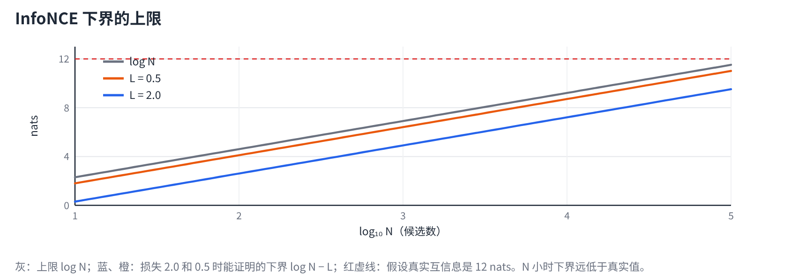
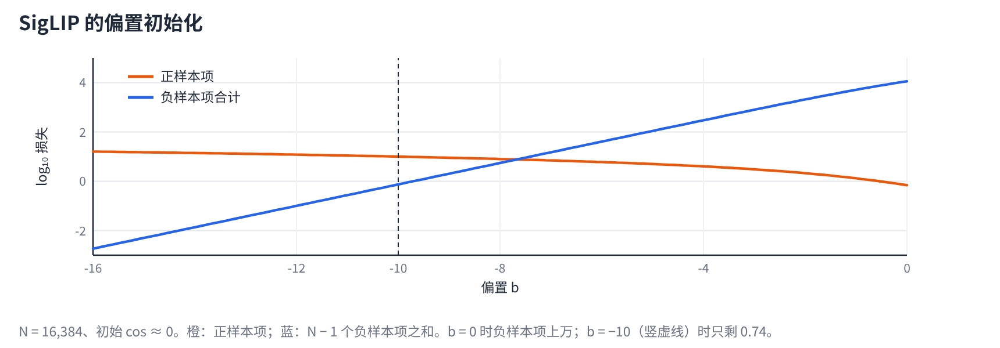
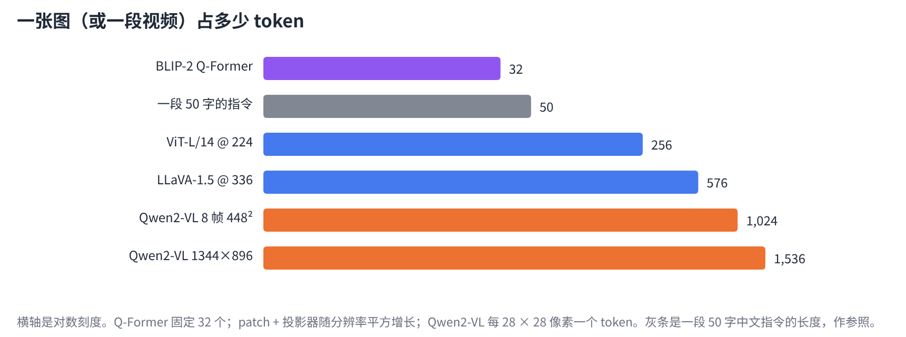
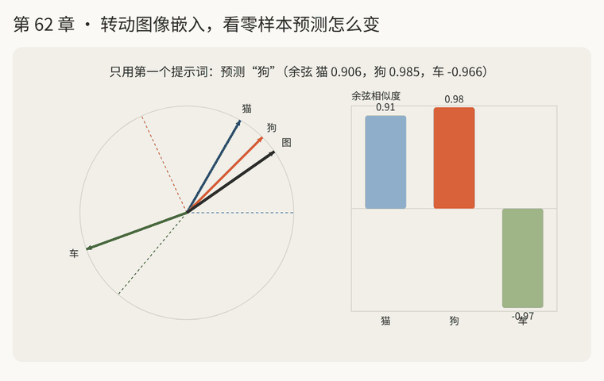

第 62 章 · 视觉-语言对齐的数学：温度、InfoNCE 下界、SigLIP 的偏置、零样本分类、视觉 token 数账
本地运行
git clone https://github.com/wikieden/math-and-eval-stats
cd math-and-eval-stats/code/notebooks
pip install jupyterlab torch numpy
jupyter lab ch62_vl_alignment.ipynb也可以下载后直接用 VS Code 打开 .ipynb 运行。需要 GPU 的章节在 Colab 里选「代码执行程序 → 更改运行时类型 → GPU」。
本章回答：CLIP 为什么一定要有温度 τ，τ = 1 会怎样？InfoNCE 说的“互信息下界”是多少，为什么批越大越好？SigLIP 把偏置初始化成 −10 是在防什么？零样本分类为什么就是一个余弦相似度的 argmax，提示词集成为什么有用？一张图进大模型要占多少个 token？ImageBind 怎么在没有成对数据的模态之间对齐？
讲解日期：2026-11-25 · 上一章：第 61 章 多模态融合的数学 · 下一章：第 63 章 非图像模态的表示
对应原文：CLIPtransformer-deep-dive/materials/text/papers/clip-2103.00020.txt（Figure 3 伪代码与可学习温度 t，L290–L316、L325–L329；零样本 §3.1，L364–L380）；SigLIPtransformer-deep-dive/materials/text/papers/siglip-2303.15343.txt（Algorithm 1 的 t′、b，L60–L80；偏置 −10 初始化，L598–L600）；CPCmath-and-eval-stats/materials/text/papers/cpc-infonce-1807.03748.txt（§2.3 InfoNCE 与互信息下界，L165–L173）；ImageBindimagebind-2305.05665.txt（式 (1) 的 InfoNCE，L126–L128；图像作“粘合剂”的涌现对齐，L33–L65）
本章缩写：CLIP = Contrastive Language–Image Pre-training（对比式 / 语言–图像 / 预训练）；SigLIP = Sigmoid Loss for Language-Image Pre-training（sigmoid 损失的语言-图像预训练）；InfoNCE = Info Noise-Contrastive Estimation（信息 / 噪声对比估计）；MI = Mutual Information（互信息）；ViT = Vision Transformer（视觉 Transformer）；BLIP-2 = Bootstrapping Language-Image Pre-training 2（自举式语言-图像预训练第 2 版）；Q-Former = Querying Transformer（用查询向量的 Transformer）；LLaVA = Large Language and Vision Assistant（大语言与视觉助手）；VL = Vision-Language（视觉-语言）；nats = 以 e 为底的信息单位。全部缩写见 附录 · 缩写与术语表
CLIP 和 SigLIP 的模型结构、训练数据和伪代码在《超越 Transformer》第 46 章 CLIP 与 SigLIP 讲过，InfoNCE 本身在第 60 章第五步。这一章只补数学：几个常数为什么这么取。
讲解
第一步：温度：余弦只有 [−1, 1]，softmax 尖不起来（2026-11-25）
类比：考试分数全部在 59 到 61 分之间，排名再清楚，“第一名的概率”也显不出来。要把差距放大，就得乘一个系数。
CLIP 的打分是 L2 归一化后的点积，也就是余弦相似度，范围只有 [−1, 1]。一批 N 对图文，每张图在 N 段文字上做 softmax（Figure 3，L290–L316）：\(\text{logits} = \cos/\tau\)。即使正样本 cos = 1、其余全是 −1（已经是最好的情况），交叉熵也有一个下限：
例子（N = 32,768，CLIP 的批大小）：
| τ | logit 范围 | 损失下限 |
|---|---|---|
| 1.0 | ±1.0 | 8.40（几乎等于 log N = 10.4） |
| 0.07（CLIP 初始值） | ±14.3 | 1.3 × 10⁻⁸ |
| 0.01（CLIP 的上限：logit 系数不超过 100） | ±100 | ≈ 0 |
τ = 1 时，模型即使把嵌入学得完美，损失也降不下来，梯度一直把所有向量往两极推。所以 CLIP 把 τ 当参数学（L325–L329，用 log 参数化保证为正），并把 1/τ 截在 100 以内防止 softmax 过于饱和（第 37 章的 softmax 饱和）。
一句话：余弦相似度只有 [−1, 1]，必须除以一个小的 τ 才能让 softmax 变尖；τ = 1 时损失下限几乎就是 log N。
第二步：InfoNCE 与互信息下界：批越大，能证明的越多（2026-11-25）
CPC（§2.3，L165–L173）证明：用 N 个候选（1 正 N − 1 负）训练的 InfoNCE 损失 \(L_N\) 满足
（第 10 章的互信息，单位 nats）。\(L_N \ge 0\)，所以这个下界最多只能到 log N。
例子：
| 候选数 N | 损失 \(L_N\) | 下界 \(\log N - L_N\) | 上限 log N |
|---|---|---|---|
| 256 | 2.0 | 3.55 | 5.55 |
| 32,768 | 2.0 | 8.40 | 10.40 |
| 32,768 | 0.0 | 10.40 | 10.40 |
这解释了对比学习“批越大越好”的一个原因：小批量时，就算图文之间的互信息很大，InfoNCE 也只能“看到”log N 那么多，任务太容易，学不到细粒度的区分。也解释了为什么损失很低时下界不能再说明什么：它已经顶到 log N 了。

图 62-1 · 横轴是候选数 N（对数），灰线是上限 log N；蓝、橙线是损失 2.0 和 0.5 时的下界。真实互信息（虚线，假设 12 nats）在 N 小时远远高于能证明的下界一句话：InfoNCE 给出 I ≥ log N − L，下界被 log N 封顶；批太小，对比任务太简单，下界说明不了什么。
第三步：SigLIP：每一对单独做二分类，偏置先设成 −10（2026-11-25）
SigLIP 不做 softmax，而是把 N × N 个图文对各自当二分类：对角线是正样本（标签 +1），其余 N² − N 个是负样本（标签 −1）：
不需要整行归一化，所以可以分块算、跨设备通信少（细节见《超越 Transformer》第 46 章）。数学上的新问题是正负样本极不平衡：每张图 1 个正样本、N − 1 个负样本。
例子（N = 16,384，t = 10，刚初始化时嵌入随机，cos ≈ 0，所以 logit 就是 b）：
| 偏置 b | 正样本项 \(-\log\sigma(b)\) | 负样本项合计 \((N-1)\cdot(-\log\sigma(-b))\) |
|---|---|---|
| 0 | 0.693 | 11,355.8 |
| −10（SigLIP 的初始化） | 10.000 | 0.744 |
b = 0 时，一开始的损失和梯度几乎全来自负样本，模型第一件事是“把所有分数压低”，而不是学对齐。b = −10 相当于先验“几乎所有配对都是错的”：σ(−10) ≈ 4.5 × 10⁻⁵，和真实的正样本比例 1/N ≈ 6 × 10⁻⁵ 差不多（b ≈ −log(N − 1) ≈ −9.7）。开头就接近负样本的正确答案，梯度集中在正样本上（L598–L600）。检测器 RetinaNet 给分类头设先验偏置（让初始输出 ≈ 0.01），是同一个想法。

图 62-2 · 横轴是偏置 b，纵轴（对数）是初始时每张图的损失：橙是正样本项，蓝是 N − 1 个负样本项之和。b = 0 时负样本项上万；b = −10 时只剩 0.74，损失主要来自正样本一句话：SigLIP 每对单独做 sigmoid 二分类；负样本是正样本的 N − 1 倍，所以把偏置初始化成 −10，让初始预测的配对概率接近真实比例 1/N，开局不被负样本的梯度淹没。
第四步：零样本分类 = 余弦相似度的 argmax（2026-11-25）
CLIP 的零样本分类（§3.1，L364–L380）：把每个类名写成提示词（“a photo of a {猫}”），过文本编码器得到 \(t_c\)，图像嵌入 \(v\)，预测
它就是一个线性分类器，权重矩阵是文本嵌入拼起来的。提示词集成：每类写多个模板，嵌入先平均再归一化，相当于平均掉单个提示词的偏差。
例子（3 维的玩具嵌入：一张猫的图 v，每类两个提示词）：
| 用哪个文本嵌入 | 猫 | 狗 | 车 | 预测 |
|---|---|---|---|---|
| 只用第一个提示词 | 0.7624 | 0.9390 | 0.2713 | 狗（错） |
| 两个提示词集成 | 0.9549 | 0.7751 | 0.2490 | 猫 |
“猫”的第一个提示词恰好写得不好，偏到狗那边去了；平均之后回到猫的方向。真实 CLIP 上，80 个模板的集成在 ImageNet 上能多出几个百分点。
场景代码：open_clip 的零样本分类（真实库调用；本书环境没装 open_clip，没跑过）：
model, _, preprocess = open_clip.create_model_and_transforms("ViT-B-32", pretrained="laion2b_s34b_b79k")
text = tokenizer([f"a photo of a {c}" for c in classes])
img_f = F.normalize(model.encode_image(preprocess(img)[None]), dim=-1)
txt_f = F.normalize(model.encode_text(text), dim=-1)
pred = (img_f @ txt_f.T).argmax(-1) # 余弦相似度的 argmax
一句话：零样本分类就是用文本嵌入当权重的线性分类器，取余弦最大的类；提示词集成平均掉单个提示词的偏差。
第五步：视觉 token 数账与 ImageBind（2026-11-25）
图像接到语言模型上，要先变成一串 token。三种接法：
| 接法 | 例子 | 一张图的 token 数 |
|---|---|---|
| ViT patch + 线性投影器 | ViT-L/14 @ 224 | (224/14)² = 256 |
| 同上，提高分辨率 | LLaVA-1.5，ViT-L/14 @ 336 | (336/14)² = 576 |
| Q-Former（32 个可学习 query 做交叉注意力，第 61 章） | BLIP-2 | 固定 32 |
| 动态分辨率 + 相邻 2×2 合并（每 token 对应 28 × 28 像素） | Qwen2-VL，1344 × 896 的图 | 48 × 32 = 1536 |
| 视频：再把相邻两帧合成一个 | Qwen2-VL，8 帧 448 × 448 | 256 × 8 / 2 = 1024 |
token 数直接决定了预填充的计算量和 KV cache（第 47 章）：注意力 O(n²)，一张高分辨率图可能比整段指令还长。Q-Former 把 token 数压到固定值，代价是丢细节；动态分辨率保留细节，代价是 token 数随图像面积线性增长。

图 62-3 · 几种接法的视觉 token 数（对数刻度）。一段 50 字的中文指令大约 50 个 token，作参照ImageBind（式 (1)，L126–L128；L33–L65）：每个模态（音频、深度、热成像、IMU）只和图像配对，用 InfoNCE 对齐到同一个空间；没有音频-文本成对数据，音频和文本也“顺带”对齐了，因为它们都对齐到了图像。数学上是相似度的传递：如果 \(\cos(a, v)\) 和 \(\cos(v, t)\) 都接近 1，单位球上 \(a\) 和 \(t\) 的夹角不超过两个夹角之和，也接近。
一句话：一张图的 token 数从 32（Q-Former）到上千（动态分辨率）不等，决定了推理成本；ImageBind 让各模态都对齐到图像，借传递性得到没有成对数据的模态之间的对齐。
动画演示：转动图像嵌入，看零样本预测怎么变

可交互版：animations/62-vl-alignment.html（滑块转动图像嵌入的方向；勾选框切换单个提示词 / 提示词集成）。
怎么看：
- 单位圆上的三条彩色箭头是三类的文本嵌入，黑色箭头是图像嵌入（第四步，画成二维）；
- 右边的柱子是余弦相似度，最高的那一类就是预测；
- 勾选“提示词集成”：每类的两个提示词（浅色细箭头）平均成一个，类别之间的分界线跟着移动。
练习与作答记录
题 1（第二步）：批大小 N = 1024、InfoNCE 损失 3.0，能证明的互信息下界是多少 nats？
作答：（待作答）
题 2（第三步）：N = 4、b = 0、初始 cos = 0 时，一张图的 SigLIP 损失（正样本项 + 负样本项）是多少？
作答：（待作答）
题 3（第五步）：Qwen2-VL 读一张 672 × 448 的图，大约占多少个视觉 token？
作答：（待作答）
口诀
余弦只在正负一，除个小 τ 才够尖；
InfoNCE 下界 log N 减损失，批小就封顶；
SigLIP 每对单独判，负多正少偏置设负十；
零样本是文本当权重，集成平均提示词；
token 数决定成本，ImageBind 借图像传递对齐。
本章复习卡片
ST201（温度与 InfoNCE 下界）、ST202（SigLIP 的偏置初始化；零样本 = 余弦 argmax 与提示词集成）、ST203（视觉 token 数账与 ImageBind）。练习做完后，按答错、卡住的地方补上。
附录 · 延伸阅读
留给以后深入学习用，不影响本章主线。★ 是建议先读的。
推荐阅读
| 读什么 | 读哪里 | 读它为了什么 |
|---|---|---|
| ★ 《超越 Transformer》第 46 章 CLIP 与 SigLIP | 全部 | 模型结构与伪代码 |
| ★ CPC（van den Oord 2018） | §2.3（L165–L173） | InfoNCE 与互信息下界 |
| SigLIP（Zhai 2023） | Algorithm 1（L60–L80）；偏置初始化（L598–L600） | sigmoid 损失与初始化 |
| CLIP（Radford 2021） | Figure 3（L290–L316）；§3.1（L364–L380） | 温度与零样本 |
| ImageBind（Girdhar 2023） | §3（L126–L128） | 以图像为中心的多模态对齐 |
| 第 47 章 推理成本 | 预填充与 KV cache | token 数怎么变成成本 |
数学原理
- softmax 的下限：logit 范围有界 [−1/τ, 1/τ] 时，交叉熵 ≥ log(1 + (N − 1)e^{−2/τ})。
- InfoNCE 下界：最优打分函数正比于密度比 p(y|x)/p(y)，代入得 I ≥ log N − L_N。
- 类别不平衡与偏置：sigmoid 输出初始化为先验比例 π，即 b = log(π/(1 − π))；π ≈ 1/N 时 b ≈ −log N。
- 单位球上的三角不等式：角距离 ∠(a, t) ≤ ∠(a, v) + ∠(v, t)。
公式清单
| 公式 | 意思 |
|---|---|
| \(\text{logits} = \cos(v_i, t_j)/\tau\) | CLIP 的打分 |
| \(L_{\min} = \log(1 + (N-1)e^{-2/\tau})\) | 温度决定的损失下限 |
| \(I \ge \log N - L_N\) | InfoNCE 的互信息下界 |
| \(-\log\sigma(z_{ij}(t\,x\!\cdot\!y + b))\) | SigLIP 的每对损失 |
| \(\hat c = \arg\max_c\cos(v, t_c)\) | 零样本分类 |
| \((H/28)\times(W/28)\) | Qwen2-VL 的视觉 token 数 |
代码对照：把本章的数字用代码算一遍
代码在仓库本地
math-and-eval-stats/solutions/chapter-code/ch62_vl_alignment.py，配套测试tests/test_ch62.py：
bash cd math-and-eval-stats/solutions/chapter-code uv run python ch62_vl_alignment.py uv run pytest tests/test_ch62.py
讲义 ↔ 代码：
| 讲义 | 公式 | 写法 | 跑出来 |
|---|---|---|---|
| 第一步 温度 | 损失下限 | clip_floor(n, tau) |
8.40 → 1.3e-8 |
| 第二步 互信息下界 | log N − L | mi_bound(n, loss) |
8.40 nats |
| 第三步 SigLIP 偏置 | 初始损失 | siglip_init_loss(n, b) |
11,355.8 vs 0.744 |
| 第四步 零样本 | 余弦 argmax | zero_shot(ensemble=...) |
狗 → 猫 |
| 第五步 token 数 | patch / 合并 | vit_tokens、qwen2vl_tokens |
576、1536 |
关键几行：
return math.log1p((n - 1) * math.exp(-2 / tau)) # 温度决定的损失下限
neg = (n - 1) * math.log1p(math.exp(z)) # N − 1 个负样本：−log σ(−z) = log(1 + e^z)
t = normalize(e.mean(0)) if ensemble else e[0] # 提示词集成：先平均再归一化
代码里才看得到的 3 件事：
- log1p 不是装饰：b = −10 时 e^b ≈ 4.5e-5，直接写
log(1 + e^b)在 float32 里会丢精度；log1p才稳。 - 集成要“先平均再归一化”：平均后的向量模长小于 1，不归一化的话所有类的分数都被缩小，比较的是错的量。
- 没写整批的损失函数：在小批量上实现 CLIP InfoNCE 与 SigLIP 损失、扫温度看效果，留给里程碑 ME-M36。
自己改一改（不影响练习答案）：
- 把
PROMPTS里“猫”的第二个提示词改成和第一个一样，集成后还能分对吗？ siglip_init_loss里把初始 cos 改成 0.1（嵌入不完全随机），b = −10 时两部分损失怎么变？